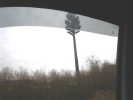
Un peu loin, Grande-Synthe, mais le prix du pétrole a baissé. Alors, je prends la route et je croise ce bel arbre. Vous connaissez ? En fait c'est un arbre artificiel en ferraille et plastique qui porte des antennes de téléphonie... Vous en croiserez de plus en plus !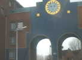
Arrivée à Grande-Synthe samedi midi par la monumentale porte du Soleil !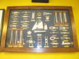
Je retrouve les gars de Moissy et on déjeune aux 3 Ancres. On peut alors y admirer une belle collection de noeuds...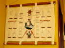
Dont beaucoup que je ne connais pas, il faudra que j'étudie ça à tête reposée !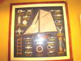
Et sur le mur d'en face... des noeuds encore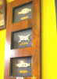
Et puis il restait une ch'tite place... Boum, encore 3 noeuds !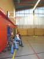
Le samedi, entraînement seulement, dans un gymnase quand même honnête, mais sans public prévu, à part quelques passants !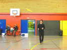
Chouette, Damien Galibour est là ! Il se plaît à faire voler Bambou Bird, mon petit oiseau... Mais il partira ce soir, dommage...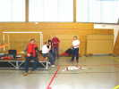
Les fécampois sont venus pour animer un atelier d'enfants. Ca ne commence que demain, mais on est content de vous voir !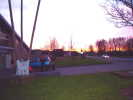
Au sortir de la salle, le soir tombe déjà, vivement l'été ! Du coup, on commence à songer à des nourritures terrestres et reconstituantes...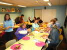
Une assoc locale s'occupe de nous faire dîner et en profite largement par la même occasion... Le couscous arrive dans le désordre, lentement et un peu froid (mais très bon, faut être juste), il faut même réclamer à boire du sérieux... L'assoc se servira après... dans un beau plat débordant et bien chaud !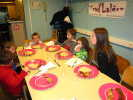
Les enfants (de l'assoc) ne sont pas oubliés et ont droit à leur petit couscous en réduction, bien sûr !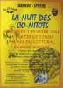
Une autre Assoc organise une soirée avec Chahut de Minuit, Pintje Bier et tout ! On aimerait pouvoir y aller...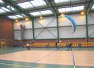
Dimanche, petit-déjeuner offert dans une très grande salle, haute de plafond, parfaite pour nous et pour les spectateurs attendus, avec de confortables gradins... Franck se lance aussitôt dans du lourd avec sa voile de traction !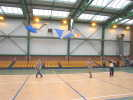
Les 3 Malards se livrent à un ballet effrêné avec Franck, Patrick et Patrice et de très grandes cannes à pêche...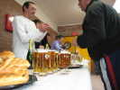
A midi, on pose pour un pot. On est dans le Nord, alors on peut se prendre une petite bière ! Et le buffet est bien garni, heureusement car les plateaux de Flunch seront super bien présentés, mais de régime : salade sans sauce, plat froid, eau, etc...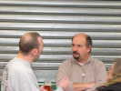
Au pot, Patrick et Patrice mettent au point leur numéro...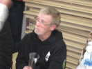
Michel prend des forces pour ses numéros hautement chorégraphiques...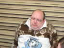
Bruno s'est beaucoup donné, et on dirait qu'il a froid, j'espère qu'il ne couve pas une grippe...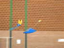
Un Malard a rencontré un papillon, et ils voleront un bon moment de concert, pour un croisement hors nature...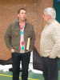
Reconnaissez-vous ce svelte jeune homme ? Hé oui, c'est bien Fabian-30, venu nous rendre une petite visite !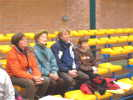
L'après-midi, comme prévu, tout Grande-Synthe est au foot (35 autocars !). Les quelques spectateurs présents sont quand même bien intéressés, y-compris cette dame plus toute jeune qui a suivi tout au long avec attention...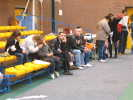
Il y a eu quand même quelques plus jeunes, pas intéressés par le foot ou qui ont raté le car... Mais celui qui se tient le menton est resté du matin tôt à la fermeture le soir, et a posé plein de questions, sans vouloir pour autant toucher un cerf-volant...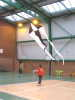
Pyrodelta et canne à pêche, ça demande du muscle, surtout à la vitesse où il le manie, et une canne solide...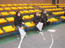
Les fécampois ont monté avec un plein succès leur atelier de construction d'un Eddy léger et les enfants s'en sont donné à coeur joie !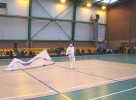
Michel Chantren, le Gentil Organisateur, a aussi reproduit avec son brio et son habileté habituels son Pierrot-Automate qui fait du Révo ! Voilà, c'est fini, on se quitte après un micro-pot et une distribution de mignonnes coupes décorées spécialement d'un cerf-volant, c'est rare !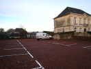
Je roulerai un peu ce soir et m'arrêterai à Avesnes-Le-Comte parce que c'est l'heure de dîner et que le nom m'a plu, ainsi que l'église...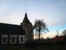
Celle-ci est dotée d'un solide clocher, presqu'un donjon comme on en voit pas mal dans le coin.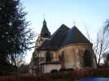
Nuit calme. Au matin, l'église est toujours belle, mais reste fermée et invisitable, dommage !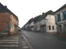
La grande rue avec ses maisons sages et classiques s'ouvre donc devant moi pour le retour à la maison !